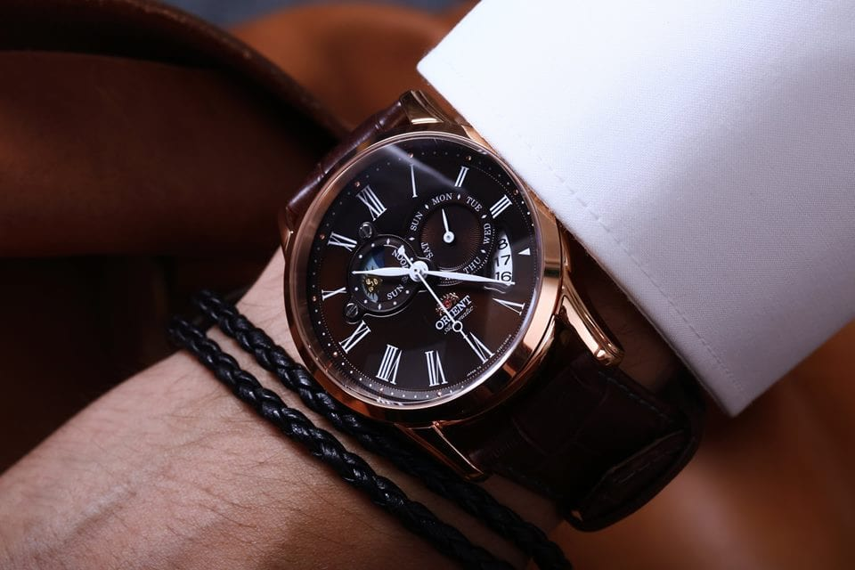
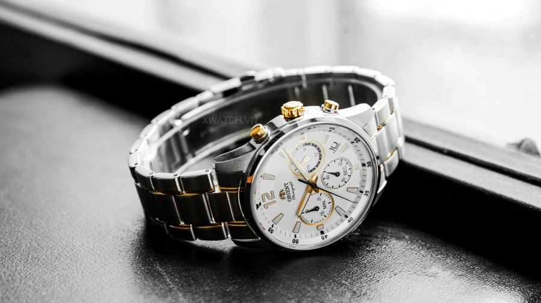

|  | Những điều cần biết khi mua đồng hồ chính hãng. Đồng hồ đeo tay được coi là phụ kiện thời trang đắt giá cho cả nam và nữ. Vì vậy, ai cũng muốn sở hữu được một cỗ máy đẹp và chất lượng. Và nhiều người đã quyết định lựa chọn phương thức mua đồng hồ xách tay chính hãng để sử dụng. Nhưng liệu họ đã có đầy đủ kiến thức về mua đồng hồ xách tay để tránh những rủi ro không đáng có chưa? Hãy cùng bài viết tìm hiểu kiến thức xoay quanh vấn đề này. |
Khám phá bí ẩn của lịch sử đồng hồ đeo tay Đồng hồ đeo tay trở thành vật phẩm minh chứng cho sự trưởng thành của người người đàn ông đích thực. Tuy vậy, khi mới ra đời, đồng hồ đeo tay là phụ kiện dành riêng cho phái đẹp. Nữ Hoàng Elizabeth I chính là người đầu tiên sở hữu đồng hồ đeo tay. Chiếc đồng hồ được tạo nên bởi bá Tước Leicester, kỵ sĩ của Nữ Hoàng. Một chiếc đồng hồ tròn gắn trên chiếc vòng nạm đầy kim cương lộng lẫy năm 1572 là mẫu đồng hồ đeo tay đầu tiên. |
|---|---|
|  | Đồng hồ quả quýt - 4 thế kỷ "oanh tạc" nền công nghiệp đồng hồ! Đồng hồ quả quýt hay còn được gọi là đồng hồ bỏ túi, đúng như tên gọi, chúng có kích thước tương đương quả quýt, nhỏ tròn, thường được đút vào túi áo hoặc túi quần, khi cần mới bỏ ra để xem giờ. Đồng hồ quả quýt ra đời từ TK XVI, phát triển rực rỡ vào TK XVII và kéo dài mãi đến đầu TK XX mới bị thay thế bởi đồng hồ đeo tay. |
Liên hệ ngay với Shop đồng hồ OxyWatch để biết thêm thông tin về giá cả sản phẩm:
Điện thoại: 0868 017117 ~ 0904 245355;
Facebook: Nguyễn Thành Đạt
Điện thoại: 0868 017117 ~ 0904 245355;
Facebook: Nguyễn Thành Đạt
- Quý khách nhận hàng mới thanh toán tiền;
- Giao hàng trực tiếp với Khách hàng tại Hà Nội;
- Khách hàng ở tỉnh khác chúng tôi sẽ chuyển phát nhanh theo đường bưu điện;
- Miễn phí toàn bộ cước vận chuyển đối với khách hàng mua lẻ trên toàn quốc.